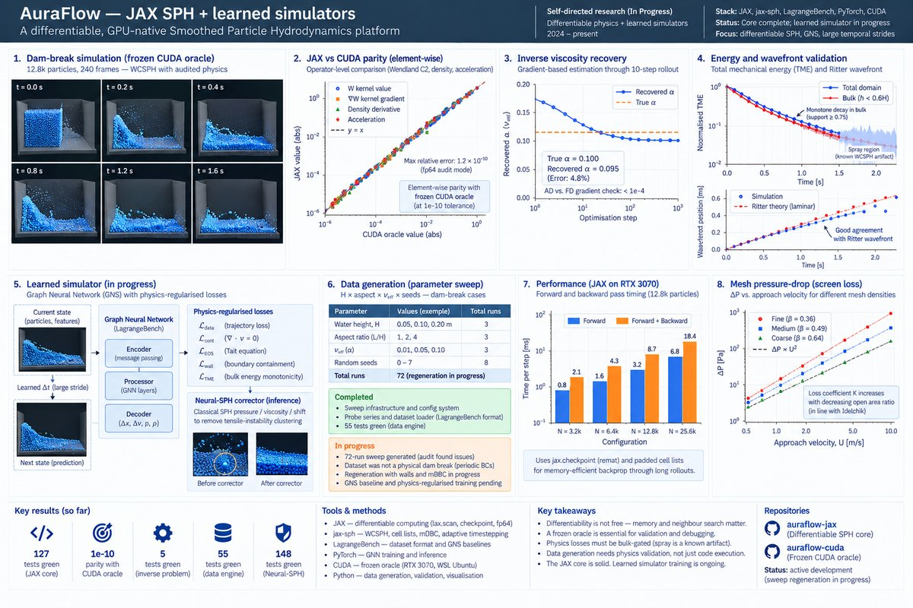
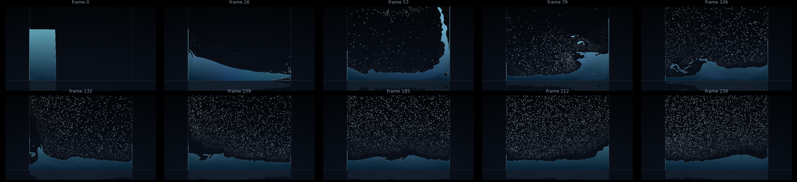

Case study · Differentiable CFD · Self-directed · In Progress
AuraFlow — JAX SPH + learned simulators.
A differentiable, GPU-native Smoothed Particle Hydrodynamics platform — building toward physics-regularized learned simulators that advance fluid flow at large temporal strides.

Problem
Classical SPH solvers are fast but not differentiable — they can't train neural networks through the physics. Physics-Informed Neural Networks (PINNs) are differentiable but fail on violent free-surface flows. The question: can we build a differentiable SPH core that (a) reproduces audited dam-break physics, (b) generates training data at scale, and (c) trains a learned simulator that advances the flow at large temporal strides?
Approach
- Frozen CUDA oracle — AuraFlow-CUDA WCSPH solver (Tait EOS, δ-SPH, Wendland C2 kernels) serves as the non-differentiable reference. Audit gates: Ritter wavefront, monotone TME decay, density stability. Never changes on mainline.
- JAX differentiable core — Forked
tumaer/jax-sph, ported physics for parity: Wendland C2 kernels, Tait EOS, δ-SPH dissipative sign, Sun/Lind shifting, Morris viscosity. Hand-rolled cell-list neighbor search for O(N) scaling. - Parity validation — Element-wise comparison against the live CUDA oracle at 1e-10 tolerance on Wendland value + gradient, density derivative, and acceleration.
- Inverse problem — Recover effective viscosity (νeff ≡ α) from synthetic shear-decay trajectories by Adam GD through a 10-step differentiable rollout.
- Learned simulator (in progress) — Graph Neural Network (GNS) training on sweep data with physics-regularized losses: continuity residual, EOS residual, wall containment, bulk energy monotonicity.
- Neural-SPH relaxation — Inference-time corrector using classical SPH pressure/viscosity/shift to kill tensile-instability clustering in GNN predictions.

Tools & setup
- JAX — Differentiable computing framework with
jax.checkpointremat,lax.scanrollouts, fp64 audit mode. - jax-sph — Forked and extended with cell-list neighbor search, mDBC boundary conditions, adaptive timestepping.
- LagrangeBench — Benchmark framework for learned simulators; GNS baseline reproduction.
- CUDA — Frozen oracle on RTX 3070 Laptop 8GB; WSL Ubuntu for GPU training.
Completed work
- Differentiable SPH core — JAX WCSPH solver with hand-rolled cell lists, mDBC walls, and fp64 audit mode. 127 tests green (P2.1-P2.5). Parity with CUDA oracle at 1e-10.
- Inverse viscosity recovery — Demonstrated gradient-based parameter estimation through a differentiable rollout. Recovered α within 5% of truth; AD-vs-FD gradient check < 1e-4. 5 tests green.
- Neural-SPH corrector — Eliminates tensile-instability clustering in learned predictions without retraining. 148 tests green.
- Data engine — Sweep infrastructure (H × aspect × νeff × seeds), probe series, LagrangeBench dataset loader. 55 tests green.
In progress
- 72-run sweep — Generated but audit found issues: the dataset was not a physical dam break (periodic/toroidal BCs, no walls). Regeneration in progress.
- GNS baseline — LagrangeBench dam_2d baseline reproduction launched but not yet completed.
- Physics-regularized training — Residual wiring complete; retraining on validated data pending sweep regeneration.
Honest status: the differentiable core is solid and validated. The learned simulator track is incomplete — the training data had to be regenerated after an audit found the initial sweep was not physical. This is research, and the research is ongoing.
Validation
The JAX core was validated element-wise against the frozen CUDA oracle at 1e-10 tolerance. Dam-break simulations reproduce the Ritter wavefront reference within expected dissipative decay. Total mechanical energy (TME) shows monotonic decay in the bulk (support ≥ 0.75), with spray regions correctly identified as a known WCSPH free-surface artifact rather than a bulk defect.
Lessons learned
- Differentiability is not free —
jax.checkpointremat and padded neighbor lists are essential for memory-efficient backprop through long rollouts. - Cell-list neighbor search is the single load-bearing blocker for scaling. Hand-rolling it (rather than depending on jax-md) was the right call for JAX 0.4.29 compatibility.
- Physics losses must be bulk-gated — training against total-TME monotonicity would fight the known WCSPH free-surface artifact in the spray layer.
- A frozen oracle is essential — without the CUDA reference, debugging the JAX port would have been impossible.
- Data generation is harder than it looks — the first 72-run sweep looked fine until an audit revealed it was a torus, not a dam break. Always validate the physics, not just the code.
Artifacts
- GitHub repository —
auraflow-jax(JAX core),auraflow-cuda(frozen oracle). - Test suite — 127+ tests covering operators, stepper, neighbors, parity, inverse problems.
- Sweep infrastructure — configs and scripts for 72-run parameter sweep (regeneration in progress).